Create and explore an ontology in Microsoft Fabric
MySQL foundations · OneLake foundations · Inventory modeling · Semantic lifecycle · Ontology
In this lab, you build one complete Fabric IQ ontology (preview) for Lakeshore Retail. You connect lakehouse tables, refrigeration telemetry in an eventhouse, and a Power BI semantic model; create inherited entity types and relationships; add business definitions and rules; explore canvas views and entity instances; and use the built-in ontology agent to answer operational questions.
Complete Parts 1-5 in order, using the same dedicated lab workspace throughout. Numbered steps restart for each task, as in the other labs on this site.
Part 1: Set up the environment
Admin-only prerequisites (reference, not learner tasks)
| Prerequisite | Who handles it | What the learner does instead |
|---|---|---|
| Users can create ontology (preview) items | A Fabric administrator enables the setting for the learning accounts or relevant security group. | Check that Ontology (preview) appears under + New item. If it is missing, ask your administrator or instructor to enable access. Do not open or edit the admin settings. |
| Users can create Fabric items | A Fabric administrator enables Fabric item creation for the learning accounts or relevant security group. | Check that Lakehouse and Eventhouse appear under + New item. If either is unavailable, ask your administrator or instructor. |
| Access to a workspace backed by an available Fabric capacity | The course provider or an authorized workspace/capacity administrator supplies the workspace and capacity access. | Use the assigned learning workspace. Create a separate lab workspace only if your learning account has permission and your instructor asks you to. Do not buy capacity or change organization-wide capacity settings. |
Administrator reference only: The current tutorial shows these tenant settings under OneLake catalog > Govern > Configurations > Tenant settings. An administrator checks that the learner's account is included in the enabled scope. This lab does not assume the settings have already been enabled.
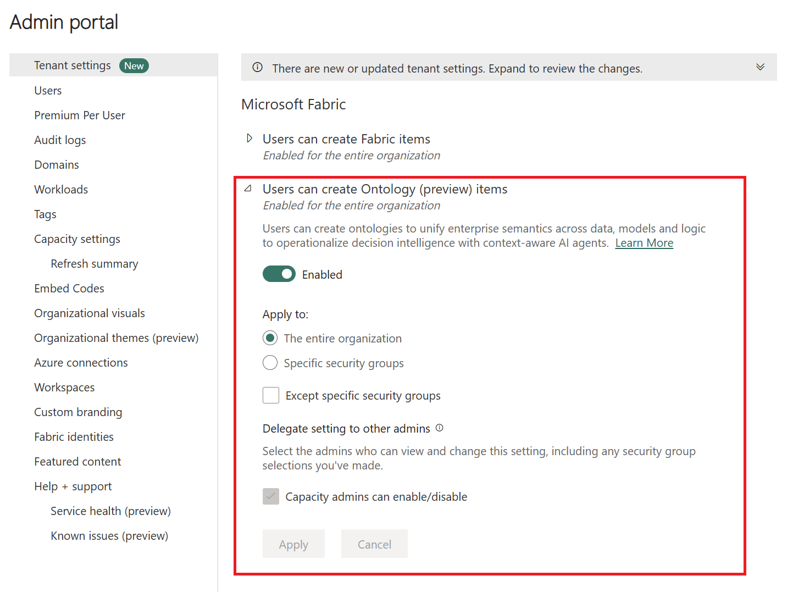
Admin-only reference: ontology item tenant setting. Learners skip this configuration screen.
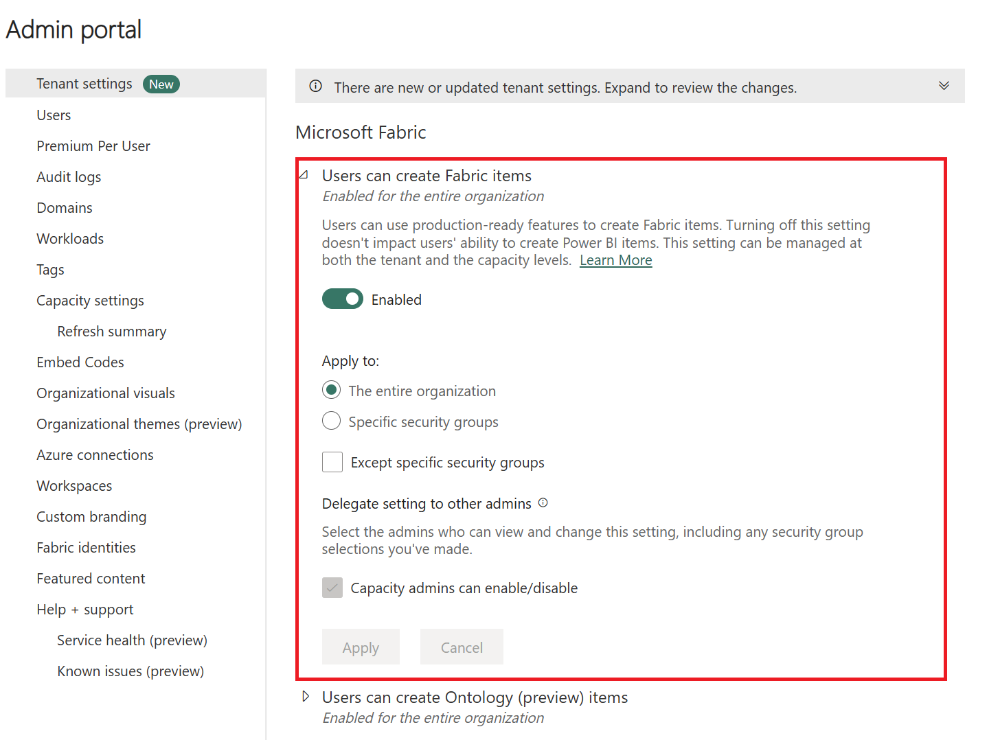
Admin-only reference: Fabric item tenant setting. Learners skip this configuration screen.
Scenario
Lakeshore Retail is a multi-region retailer that sells general merchandise, perishable goods, and frozen products through stores supplied by regional distribution centers. Store operations teams need to maintain product availability without increasing waste, while frozen products must remain within safe storage temperatures throughout the retail cold chain.
This tutorial works toward one concrete operational outcome: Which high-priority stores in the West have frozen products below safety stock, a recent refrigeration-temperature exception, and on-shelf availability below target? For each store, show the next inbound shipment and its expected arrival.
With a robust ontology, the ontology agent can answer this question. Design an ontology that helps the agent understand that a frozen product is a type of product, what below safety stock and temperature exception mean, how products are stocked at stores, which refrigeration units operate at each store, how inbound shipments connect distribution centers to stores, and how the governed Power BI measure for on-shelf availability should be calculated.
The ontology in this tutorial connects operational signals, business definitions, governed metrics, and business relationships so that an agent can explain where intervention is needed and why.
Ontology
The Lakeshore Retail elements in this tutorial comprise the following ontology. Review the diagram to understand the entity types and relationships that are involved in the scenario.
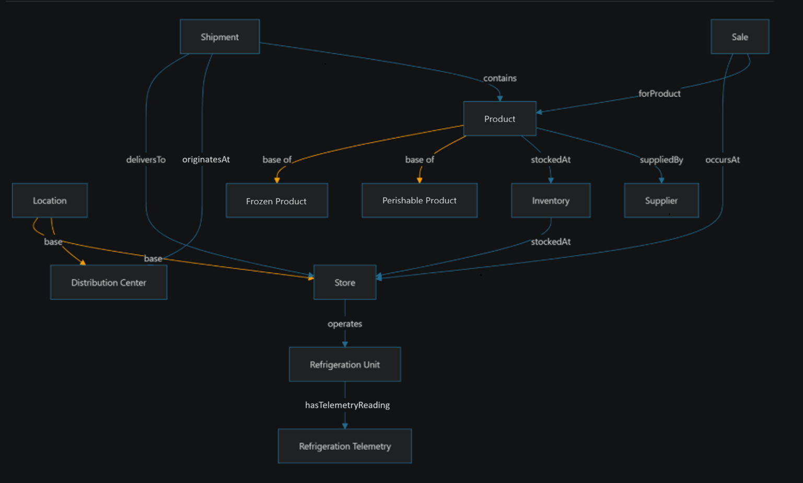
Download sample data
Download each file below and keep the file names unchanged. Right-click and choose Save link as... if a CSV opens in your browser. For the PBIX file, use its download link. These local copies come from Microsoft Fabric samples: New experience.
| Sample file | Destination |
|---|---|
| SalesReport.pbix | Import into the workspace as a report and semantic model |
| dim_refrigeration_units.csv | Lakehouse: load as a delta table |
| dimlocations.csv | Lakehouse: load as a delta table |
| dimproducts.csv | Lakehouse: load as a delta table |
| dimsuppliers.csv | Lakehouse: load as a delta table |
| fact_inventory_positions.csv | Lakehouse: load as a delta table |
| factshipments.csv | Lakehouse: load as a delta table |
| refrigeration_telemetry.csv | Eventhouse: RefrigerationTelemetry |
Learner task: create your lab workspace
- Open Microsoft Fabric and sign in with your learning account.
- Select Workspaces, then New workspace. Give the workspace a unique lab name and use the available capacity specified by your instructor.
- Use this workspace for all items in Parts 1-5. If the workspace has no capacity or you cannot create the required items, stop and ask your instructor or administrator to prepare the environment; do not change tenant settings yourself.
Prepare the lakehouse
Follow these steps to prepare the Lakeshore static data in a lakehouse.
Start in your Fabric workspace. Use the + New item button to create a new Lakehouse item.
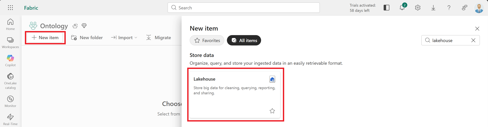
For the lakehouse Name, enter LakeshoreStaticDataLH. For Location, select your workspace. Keep the Lakehouse schemas checkbox selected (default) and select Create.
The new lakehouse opens when it's ready. From the lakehouse ribbon, select Get data > Upload files.
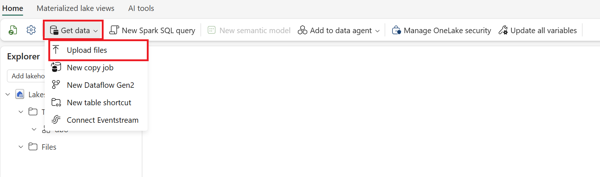
Upload all except one of the sample CSV files to your lakehouse. Don't upload refrigeration_telemetry.csv (you upload this file to eventhouse instead in a later step), or SalesReport.pbix (you import this report and semantic model into the workspace in the next task).
Expand the Files folder in the Explorer to view your uploaded files. Next, load each file to a delta table.
For each file, select ... next to the file name, then Load to Tables > New table.
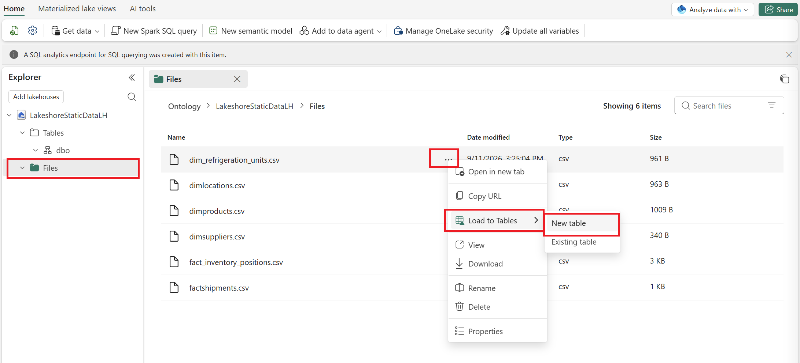
In Load file to new table, keep the schema as dbo and the default lowercase table name. Confirm that Use header for column names is checked and Separator is a comma. If the header box is already checked, leave it checked. Select Load, then wait for the table job to finish before loading the next CSV.
The lakehouse looks like the following image when you're done. The default table names reflect the file names in all lowercase.
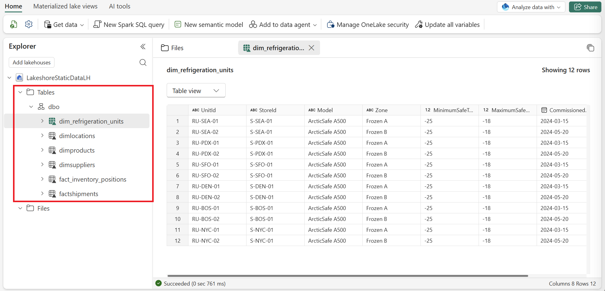
Verify the lakehouse: Open each table preview and check for real column names, not _c0, _c1, and so on. The CSV header must not appear as a data row. Expected row counts are dimlocations: 9; dimproducts: 8; dimsuppliers: 4; dim_refrigeration_units: 12; fact_inventory_positions: 48; factshipments: 8.
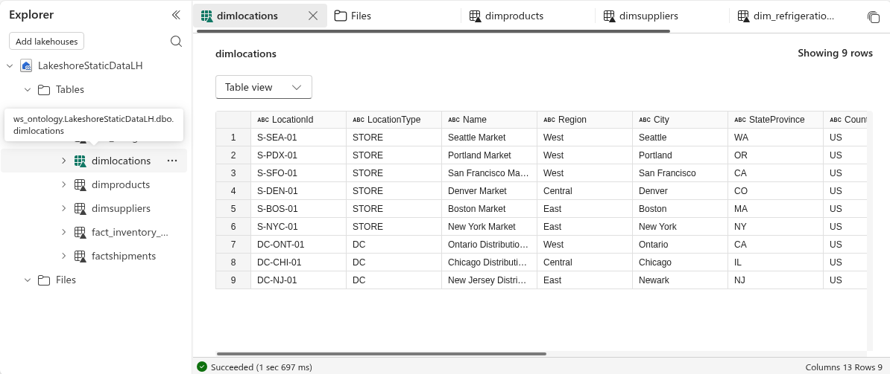
Prepare the eventhouse
Follow these steps to upload the device streaming data file to a KQL database in an eventhouse.
In your Fabric workspace, select + New item to create a new eventhouse called LakeshoreTelemetryDataEH. Fabric creates a default KQL database with the same name.
The eventhouse opens when it's ready. Open the KQL database by selecting its name in the explorer.
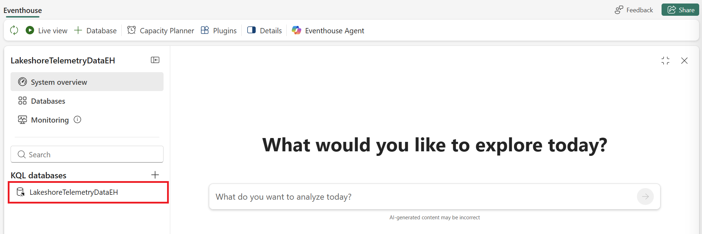
Next, create a new table called RefrigerationTelemetry that uses the refrigeration_telemetry.csv sample file as a source.
In the menu ribbon, select Get data > Local file.
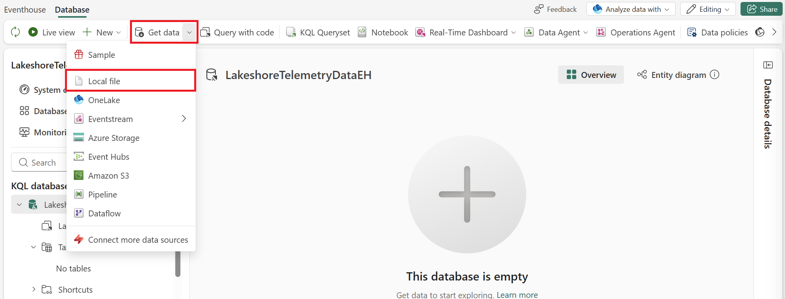
Create a New table called RefrigerationTelemetry and browse for the refrigeration_telemetry.csv file that you downloaded earlier.
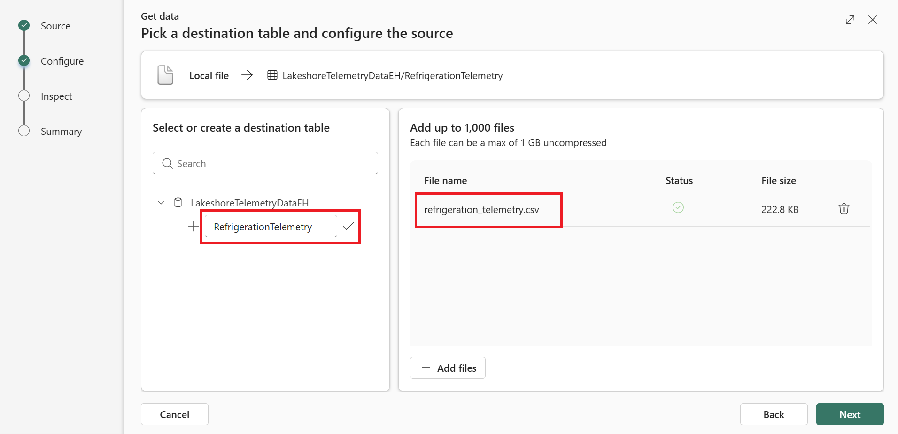
Before continuing, confirm the selected refrigeration_telemetry.csv shows a nonzero file size: the sample is 224,693 bytes (about 219 KB). A file shown as 0.0 B is not ready to ingest. Select the downloaded CSV again rather than continuing with an empty file.
Select Next. On Inspect, verify the CSV column headers: TelemetryId, UnitId, Timestamp, TemperatureC, HumidityPct, DoorOpen, and SensorStatus. Keep the inferred settings if correct, then select Finish and wait for ingestion to complete.
When you're done, the KQL database shows the RefrigerationTelemetry table with data:
Verify ingestion: Run RefrigerationTelemetry | count in the database's KQL query editor. The result should be 3,468 rows. Confirm the named columns are present and the CSV header was not ingested as a data row before continuing to the semantic model.
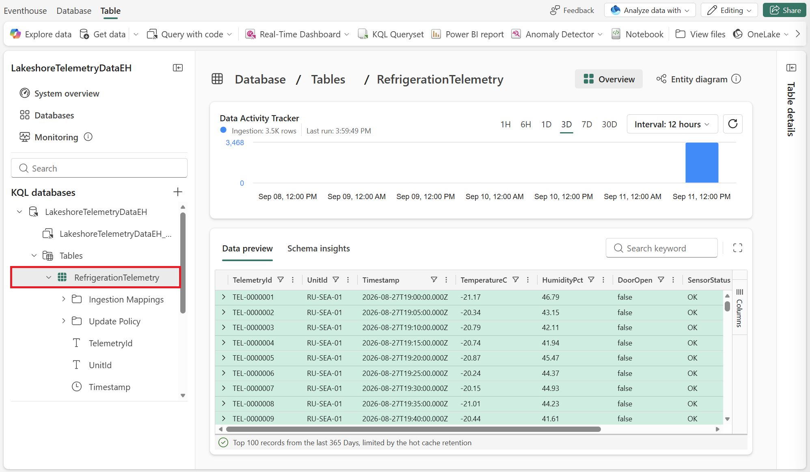
Upload the semantic model
Finally, upload the sample semantic model to your workspace.
In your Fabric workspace, select Import > Report, Paginated Report or Workbook > From this computer.
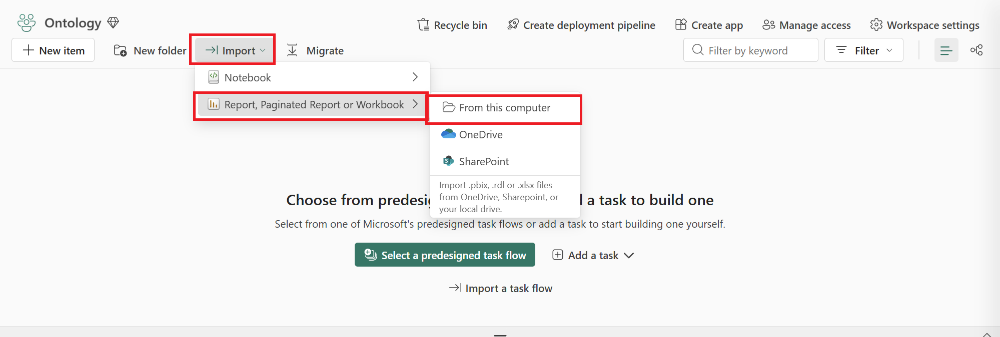
Find the SalesReport.pbix file that you downloaded and select Open.
The report is visible in your workspace, and a semantic model is created with the same name.
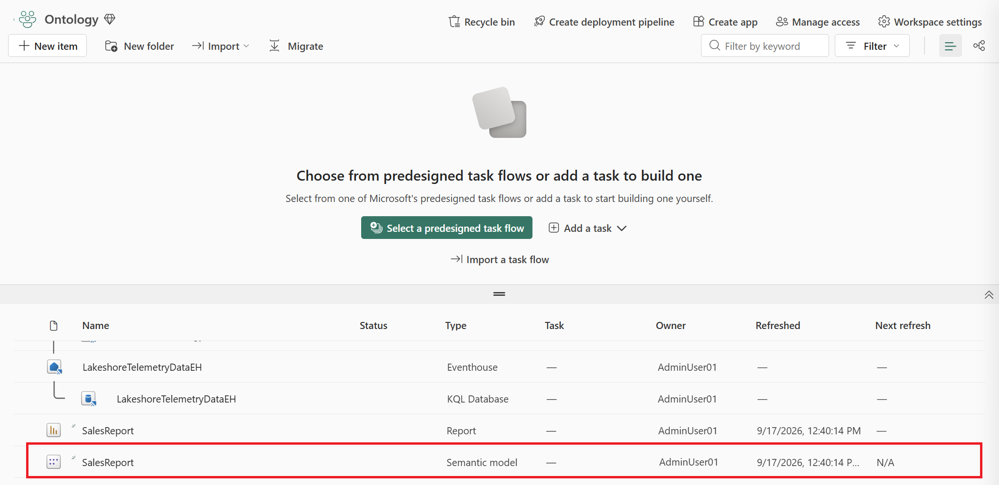
Checkpoint: Your workspace contains LakeshoreStaticDataLH with six delta tables, LakeshoreTelemetryDataEH with RefrigerationTelemetry, and both the SalesReport report and semantic model.
Part 2: Create entity types, data bindings, and relationships
Create ontology (preview) item
In your Fabric workspace, select + New item. Search for and select the Ontology (preview) item.
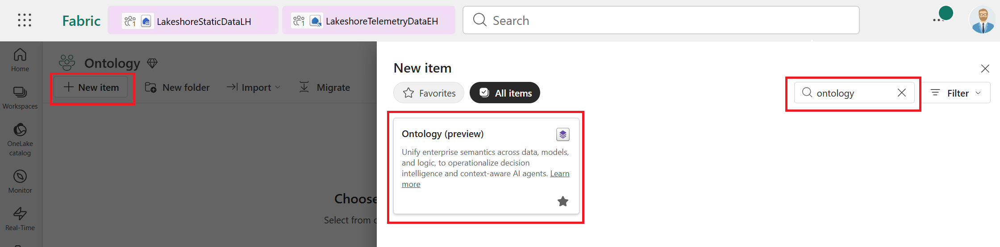
In the New Ontology dialog, enter a Name of LakeshoreOntology. Set the Location to your workspace. Select Create.
Tip: Ontology names must be under 90 characters, begin with a letter, and include only numbers, letters, and underscores. Don't use spaces or dashes.
The ontology opens when it's ready. Initial provisioning can take a few minutes. Wait until the canvas and Add entity type button appear; do not create a second item while the first is opening. If a first-use Welcome to Ontology dialog or configuration tour appears, close it to continue with these steps.
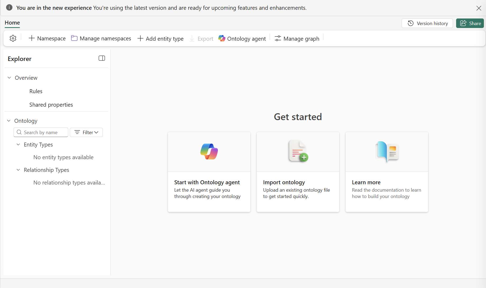
Note: If you see an error that Fabric is unable to create the ontology (preview) item, ask your administrator to confirm the required settings are enabled for your learning account, as described in the Tutorial prerequisites.
Next, create entity types, data bindings, and relationships based on data from your lakehouse tables.
Create entity types and data bindings
First, create entity types. Entity types represent types of objects in a business. After you create the entity types, create their properties by binding source data columns from the LakeshoreStaticDataLH lakehouse tables.
Add base entity type (Location)
From the top ribbon, select + Add entity type.
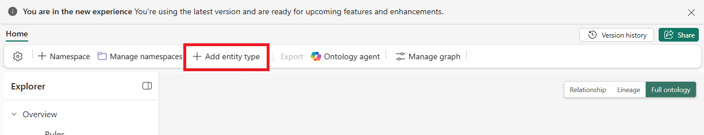
Enter Location for the entity type name and select Add Entity Type.
The Location entity type appears on the configuration canvas.
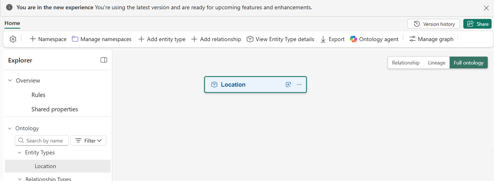
Bind Location data
On the configuration canvas or the Explorer, select ... next to the entity name and select Bind data.
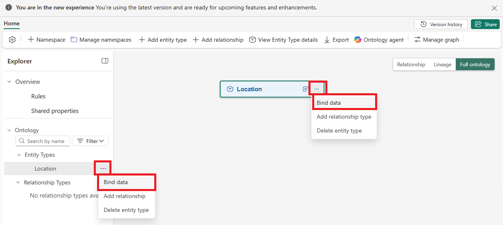
Select Add to add a data source.
Find the data source in the OneLake catalog. Expand LakeshoreStaticDataLH > dbo and select the dimlocations table. Confirm with Select table.
The data source loads.
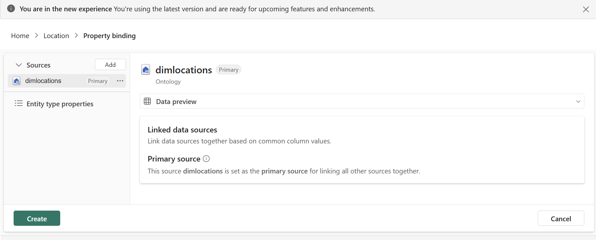
Select Entity type properties to see properties of the entity type. The columns from the dimlocations table automatically populate as proposed properties.
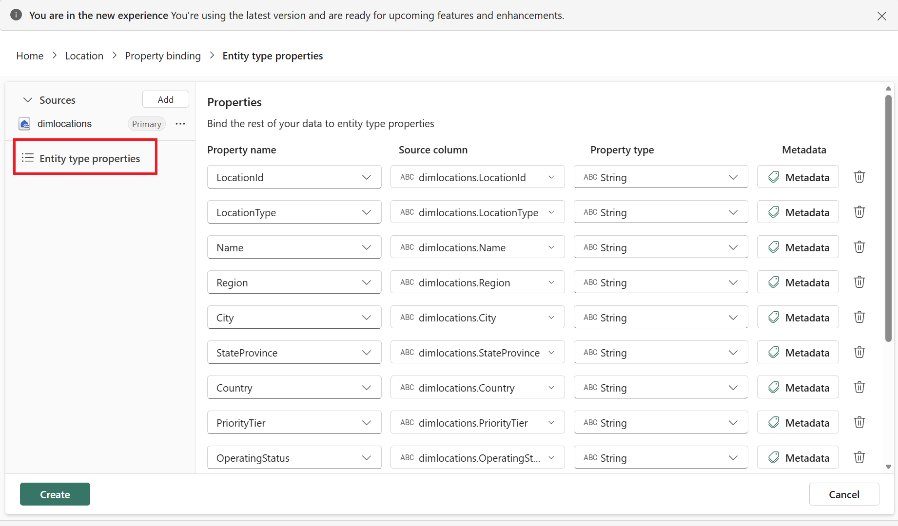
Without making any changes to the properties, select Create to save the data binding. You see a banner confirming that Entity type updated successfully.
Select Cancel to close the property binding dialog.
You see the Configure page of the entity type details. This page surfaces information about the entity type, including its properties and data bindings. View your configured data bindings.
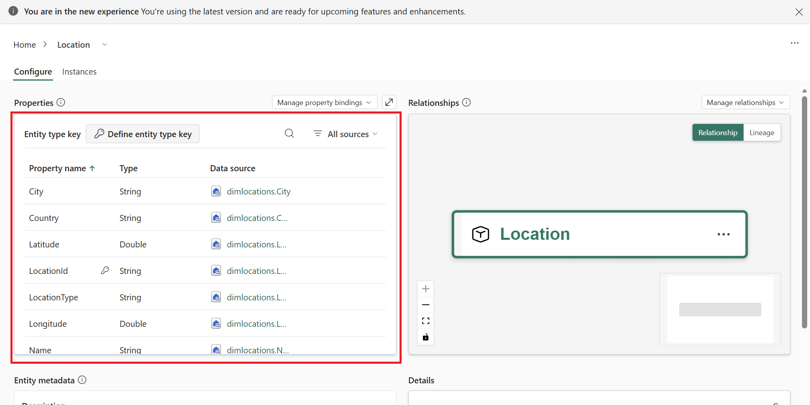
Now the Location entity type is complete.
Add inherited entity type (Store)
Next, add an inherited entity type. The Store entity inherits from Location, which automatically gives it all of Location's properties.
Select Home to return to the configuration canvas where you can add new entity types.
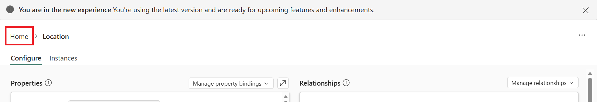
From the top ribbon, select + Add entity type.
Enter Store for the Entity type name. Expand Additional configuration and set Choose entity to inherit from to Location. Select Add Entity Type.
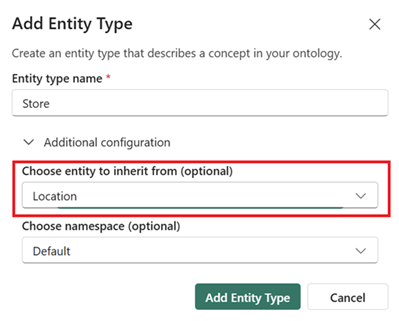
The Store entity type appears on the configuration canvas.
Select the Store entity type and select View Entity Type details.
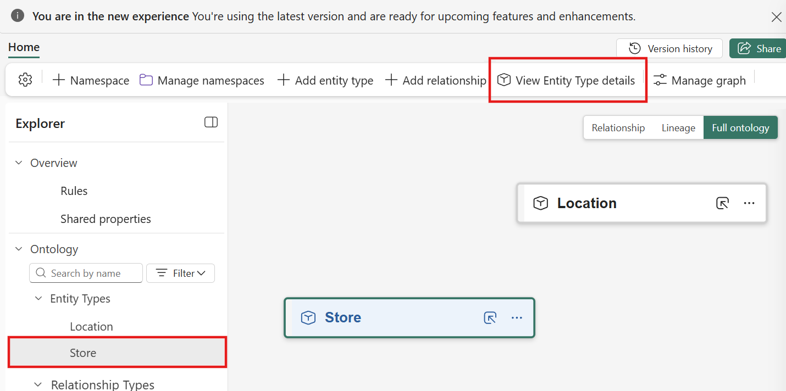
In the Configure tab, confirm that the Store entity type already has properties. These properties are inherited from the Location parent, but you still need to bind them to a source.
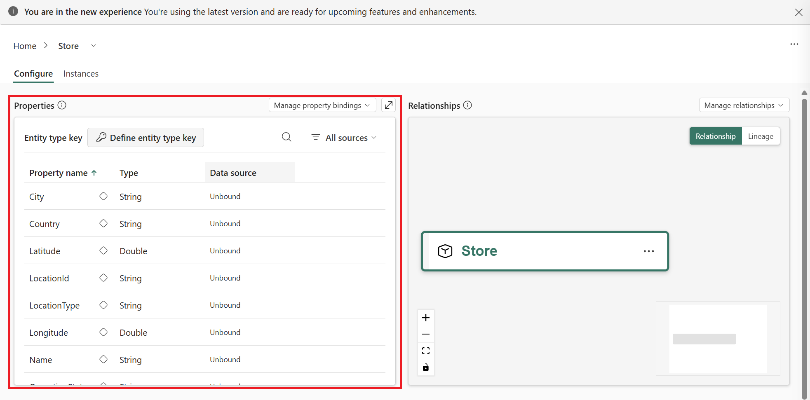
Bind Store data
Select Manage property bindings > Add binding and properties.
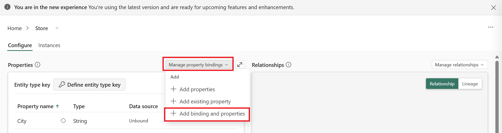
The property binding page opens.
Add the LakeshoreStaticDataLH > dbo > dimlocations table as a data source.
Select Entity type properties, verify that properties have a populated source column, and select Create.
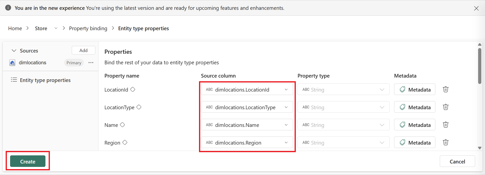
Select Cancel to return to the Configure page for the entity type.
Now the Store entity type is complete. Continue to the next section to create the rest of the entity types in the sample scenario.
Add other entity types
- Return Home, select + Add entity type, and use each row of the table below to enter its name and parent. Create Location before Distribution Center, and Product before Frozen Product and Perishable Product.
- For each new entity, open Bind data (or Manage property bindings > Add binding and properties for inherited properties), add the listed source, and select Entity type properties.
- Check that every property maps to the intended source column. Select Create, then Cancel to close the saved binding dialog and return to Configure.
- Use the eventhouse table only for Refrigeration Telemetry. For lakehouse tables, expand the dbo schema when browsing the data source.
Use the same steps that you used for the Location and Store entity types to create the entity types described in the following table. Add all of their source columns as properties.
| Entity type name | Inherits from | Data source table | Notes |
|---|---|---|---|
| Distribution Center | Location | LakeshoreStaticDataLH > dimlocations | |
| Product | LakeshoreStaticDataLH > dimproducts | ||
| Frozen Product | Product | LakeshoreStaticDataLH > dimproducts | |
| Perishable Product | Product | LakeshoreStaticDataLH > dimproducts | |
| Inventory | LakeshoreStaticDataLH > fact_inventory_positions | ||
| Supplier | LakeshoreStaticDataLH > dimsuppliers | ||
| Shipment | LakeshoreStaticDataLH > factshipments | ||
| Refrigeration Unit | LakeshoreStaticDataLH > dim_refrigeration_units | ||
| Refrigeration Telemetry | LakeshoreTelemetryDataEH > RefrigerationTelemetry | This entity type uses the eventhouse table, not a lakehouse table, as its data source. |
When you finish, you see all the entity types listed in the Explorer in the configuration canvas.
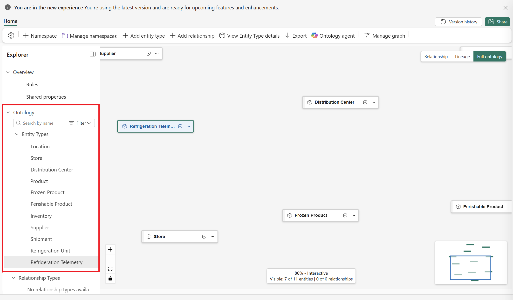
Add Sale with the ontology agent
Finally, add one more entity type: Sale. Unlike the other entity types, Sale's source data is in a semantic model and has associated DAX measures. To bind this Sale data without having to recreate it manually, use the ontology agent.
Select Ontology agent from the top ribbon. The ontology agent opens in Plan mode.
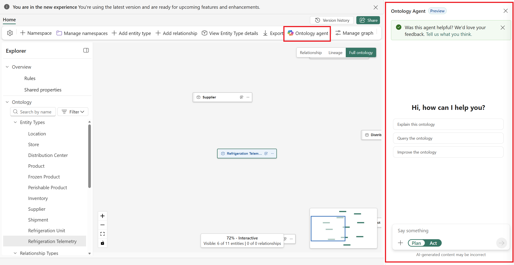
Send the following query: Create a new entity type called Sale, bound to data in the Sales table from the SalesReport semantic model inside this workspace.
The ontology agent reasons and creates a plan for adding the new entity type.
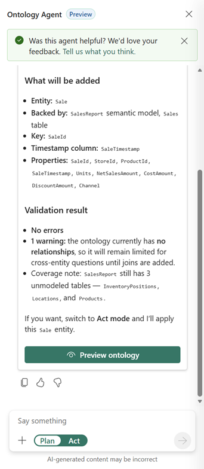
Toggle to Act mode and send Apply the entity type plan.
The ontology agent adds the Sale entity type to the canvas.
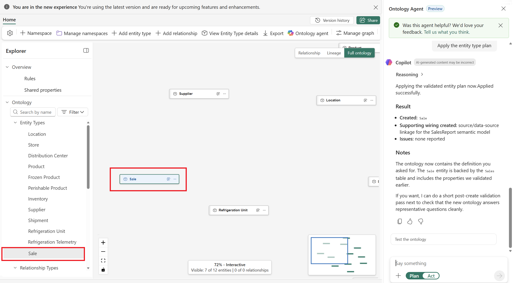
With the new Sale entity type highlighted, select View Entity Type details.
Verify that Properties are populated and bound to the semantic model data source.
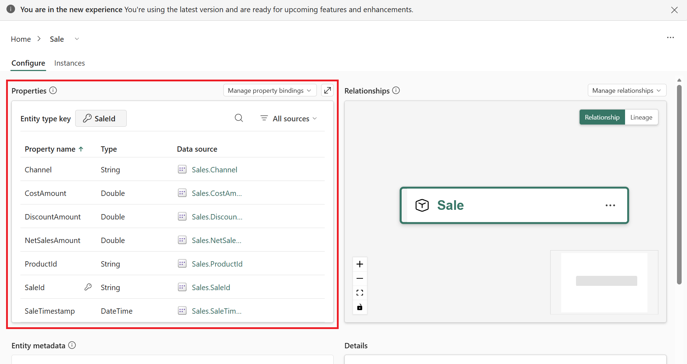
Scroll down to view the Metrics section and verify that two metrics are added. Ontology metrics are based on DAX measures from the semantic model source.
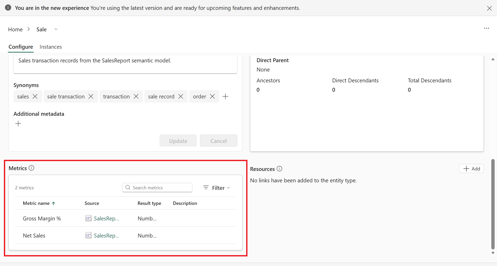
Now you have all entity types for the scenario created and bound to source data.
Create relationship types
Next, create relationship types between the entity types to represent contextual connections in your data.
Store operates Refrigeration Unit
Select the Store entity type from the Explorer.
Select Add relationship from the menu ribbon or the Explorer, or Add relationship type from the entity on the configuration canvas.
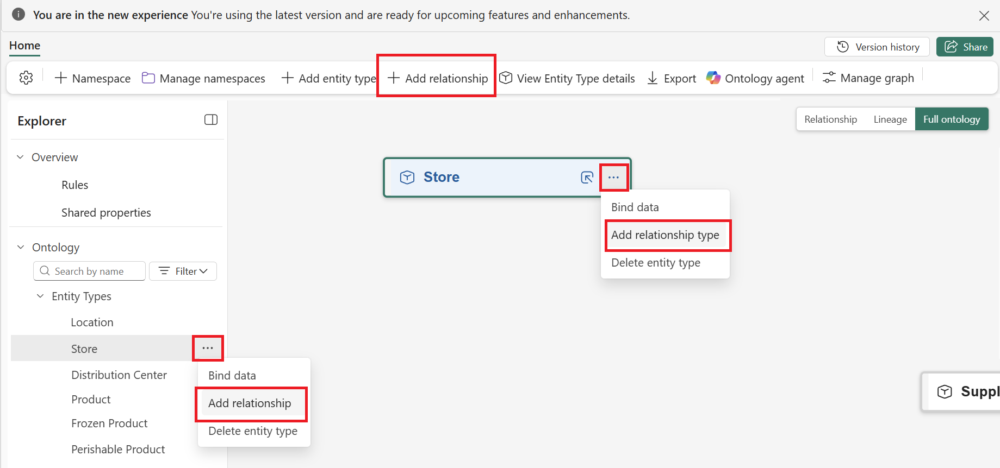
Enter the following relationship type details and select Create.
- Relationship type name: operates
- Origin entity type: Store
- Target entity type: Refrigeration Unit
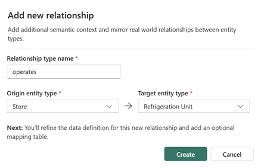
The relationship appears on the semantic canvas. Select it to open the relationship details configuration.
Observe the sections of the configuration page:
- Origin entity type: Lists details of the origin entity type (Store)
- Relationship: Sets details of the relationship type (operates)
- Target entity type: Lists details of the target entity type (Refrigeration Unit)
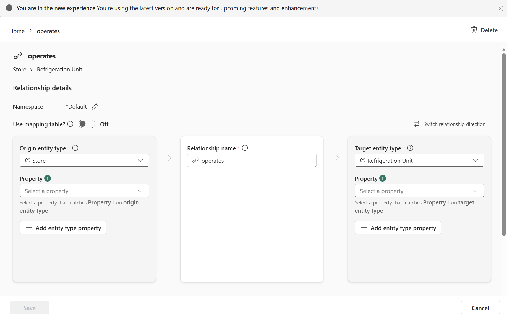
In the Origin entity type section, expand Property and select
LocationId.In the Target entity type section, expand Property and select
StoreId. These fields indicate that theLocationIdon a Store can be matched to theStoreIdon a Refrigeration Unit to relate them to each other.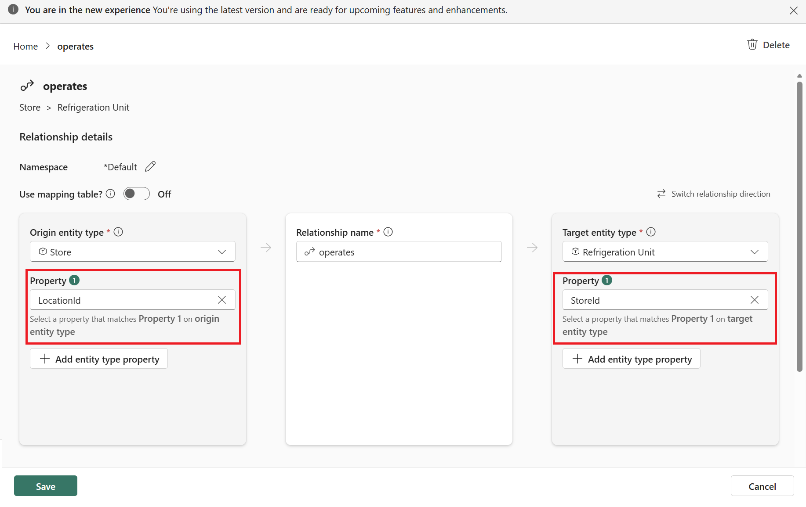
Save the relationship type. You see a banner confirming that the ontology Successfully updated the relationship type. Select Cancel to close the configuration options.
You see the Configure page for the Store entity type, where the new relationship is visible in the Relationships section.
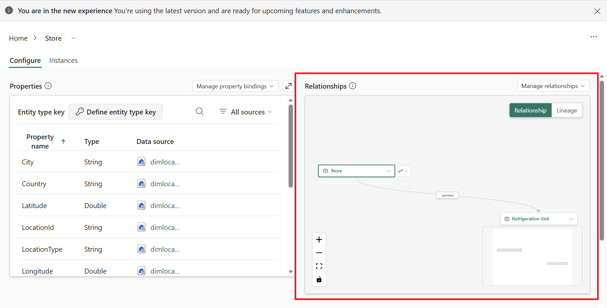
Now the first relationship is complete. Continue to the next section to create the rest of the relationship types in the sample scenario.
Add other relationship types
Avoid duplicates: The first row below repeats the operates relationship you just created. Leave it as-is and add the remaining nine rows. The two stockedAt relationships have different origin and target types, so create both.
- For each remaining row, select its origin entity, choose Add relationship, and enter the name, origin, and target exactly as shown.
- Open the new relationship and select the origin and target Property values shown in parentheses.
- Select Save, then Cancel to close the details. Confirm the relationship appears before continuing to the next row.
Select Home to return to the configuration canvas where you can add new relationship types.
Follow the same steps that you used for the first relationship type to create the relationship types described in the following table.
| Relationship type name | Origin entity type (Property) | Target entity type (Property) |
|---|---|---|
| operates | Store (LocationId) |
Refrigeration Unit (StoreId) |
| deliversTo | Shipment (ToStoreId) |
Store (LocationId) |
| occursAt | Sale (StoreId) |
Store (LocationId) |
| stockedAt | Inventory (StoreId) |
Store (LocationId) |
| originatesAt | Shipment (FromLocationId) |
Distribution Center (LocationId) |
| forProduct | Sale (ProductId) |
Product (ProductId) |
| stockedAt | Product (ProductId) |
Inventory (ProductId) |
| suppliedBy | Product (SupplierId) |
Supplier (SupplierId) |
| contains | Shipment (ProductId) |
Product (ProductId) |
| hasTelemetryReading | Refrigeration Unit (UnitId) |
Refrigeration Telemetry (UnitId) |
When you're done, the relationship types are visible on the configuration canvas.
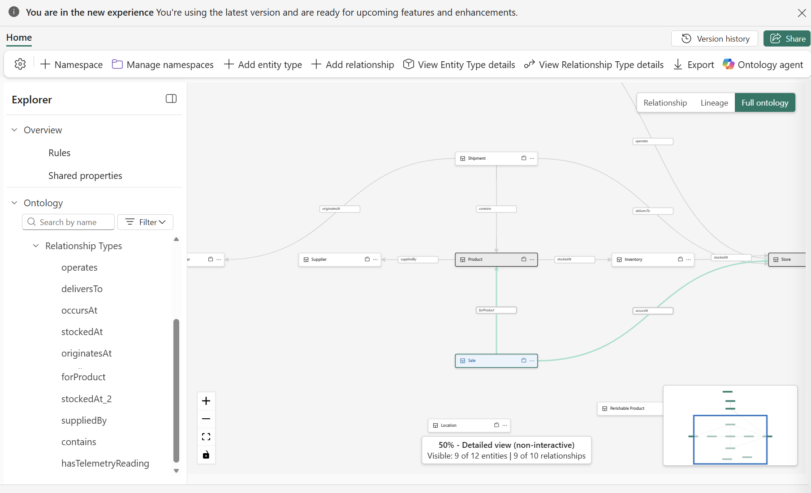
Checkpoint: You have 12 entity types, including Sale with two semantic-model metrics, and 10 relationship types. You created operates only once; it is repeated in the reference table for completeness.
Part 3: Enrich the ontology with metadata and business rules
Important: Metadata descriptions explain business meaning; they do not themselves filter the bound rows. The tutorial describes Store as LocationType = STORE, Distribution Center as LocationType = DC, and product subtypes by StorageClass. Verify the subtype instances and the agent's filtering before treating results as filtered data. Business rules are definitions for consumers, not automatic alerts or actions.
Add metadata
You can add metadata to entity types and to specific properties on the entity types. You can also add metadata to relationships.
Add entity type metadata
Metadata for entity types supports descriptions, synonyms, and additional metadata key-value pairs. Follow these steps to add that metadata to your entity types.
Start with the Store entity type. Select it on the semantic canvas and select View Entity Type details.
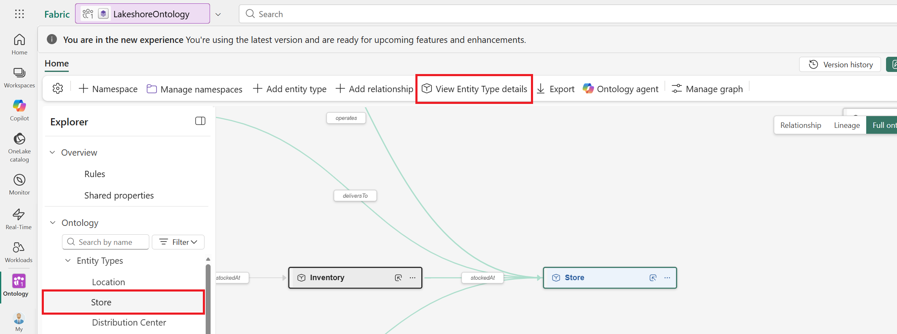
On the Configure page that opens, scroll down to the Entity metadata section.
Enter the following Description: Filtered locations binding where LocationType = STORE; priorityDefinition=Tier 1 stores require same-day response.
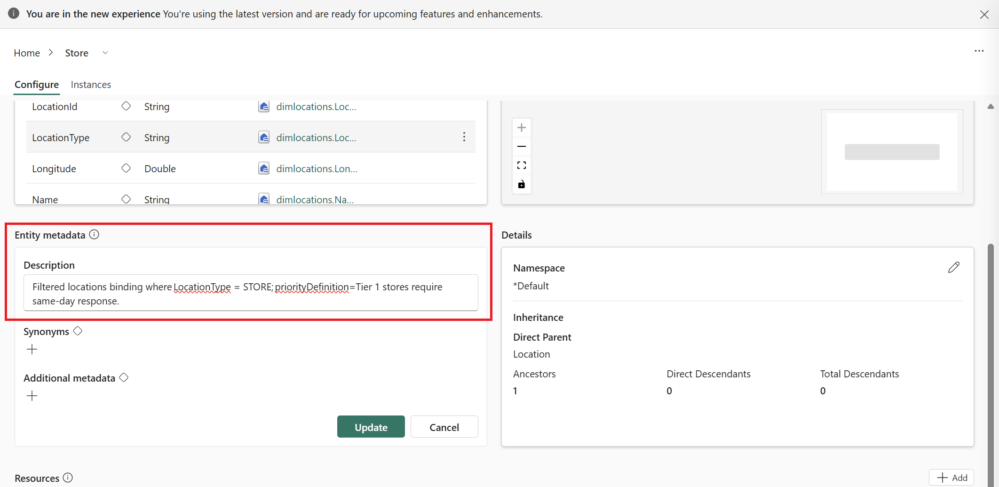
Select Update.
Use the same steps that you used for the Store entity type to add the entity type metadata described in the following table.
Entity type name Metadata Notes Distribution Center Description: Filtered locations binding where LocationType = DC. Frozen Product Description: Filtered items binding where StorageClass = FROZEN. Perishable Product Description: Filtered items binding where StorageClass = PERISHABLE. Inventory Additional metadata:
On-Shelf Availability % : On-shelf availability percentage is calculated by dividing the total ShelfAvailableUnits by the total ShelfCapacityUnits. If total ShelfCapacityUnits is zero, the result is blank to avoid division by zero.
Low On-Shelf Availability : On-Shelf Availability % less than 95Additional metadata is entered as key-value pairs. Sale Description and Synonyms are already added to the entity type from the semantic model import. Just review the metadata that's already there (no need to add metadata manually).
Add entity type property metadata
Metadata for properties supports descriptions and additional metadata key-value pairs, but not synonyms. Follow these steps to add metadata to properties on your entity types.
Start with Product >
ProductId. Select the Product entity type, select ..., and then select Bind data.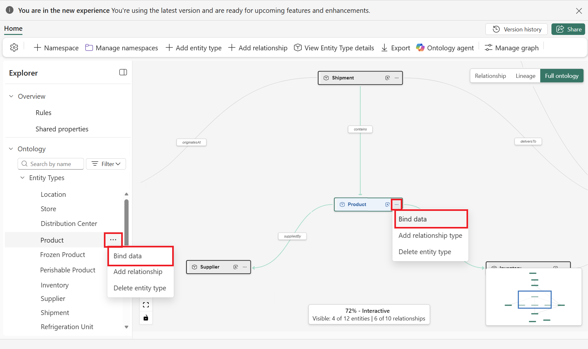
Select Entity type properties from the left pane to open the Properties list.
Next to the
ProductIdproperty, select Metadata.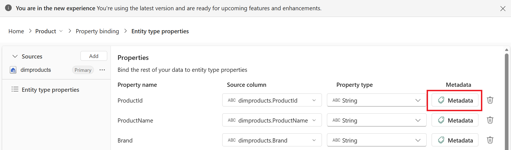
For Description, enter Enterprise product identifier; not a supplier SKU or UPC.
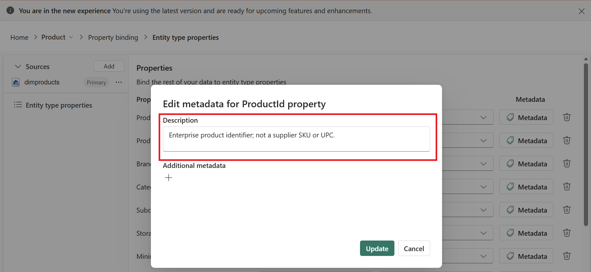
Select Update.
Select Save.
Use the same steps that you used for the Product >
ProductIdproperty to add the property metadata described in the following table.Entity Type Property Metadata Refrigeration Telemetry TemperatureC Description: Temperature in Celsius. Inventory InventoryStatus Description: 0 is AT_RISK and 1 is HEALTHY.
Add relationship metadata
Metadata for relationship types supports descriptions and additional metadata key-value pairs, but not synonyms. Follow these steps to add metadata to your relationship types.
Start with Store operates Refrigeration Unit. Select the Store entity in the Explorer to show it on the configuration canvas, and select the operates relationship connected to it to open the relationship configuration options.
Scroll down to the Metadata section. Select Edit.
For Description, enter Identifies the refrigeration equipment operating in a store.
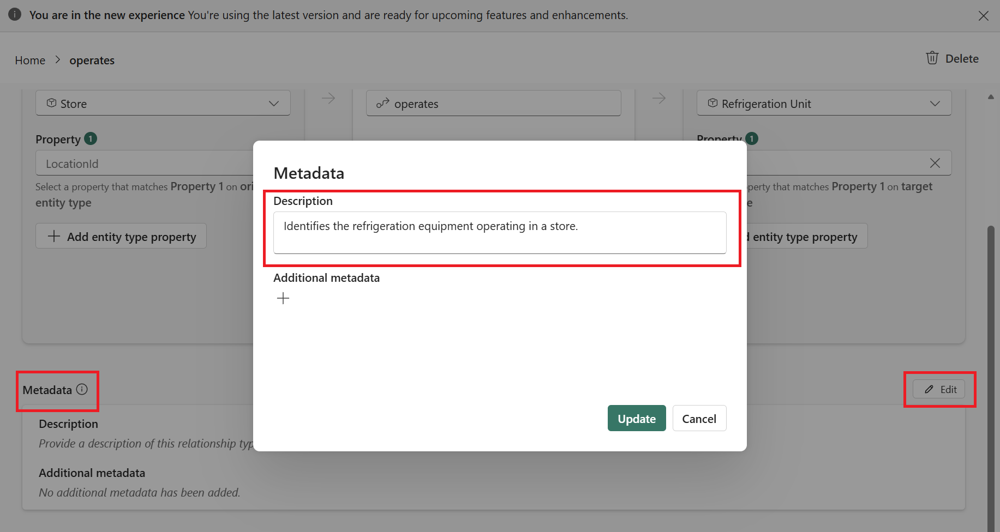
Select Update.
Use the same steps that you used for the Store operates Refrigeration Unit relationship type to add the relationship type metadata described in the following table.
Relationship type name Source > target entity type Metadata operates Store > Refrigeration Unit Description: Identifies the refrigeration equipment operating in a store. deliversTo Shipment > Store Description: Identifies the store receiving the shipment. occursAt Sale > Store Description: Identifies where the sale occurred. stockedAt Inventory > Store Description: Represents an active store assortment and its current inventory position, not merely a historical sale. originatesAt Shipment > Distribution Center Description: Identifies the distribution center sending the shipment. forProduct Sale > Product Description: Identifies the item sold. stockedAt Product > Inventory Description: The item is part of the store's active assortment and has a current inventory position there. suppliedBy Product > Supplier Description: Identifies the supplier responsible for the items. contains Shipment > Product Description: Identifies the item being replenished. hasTelemetryReading Refrigeration Unit > Refrigeration Telemetry Description: Identified sensor telemetry readings for refrigeration units.
Add rules
Rules are context: Creating these definitions does not start temperature monitoring or send notifications. Add each of the three distinct rules once; the first rule is repeated in the table only as a reference.
Next, add some business rules that give more detail about day-to-day operations. Write rules in natural language and link them to entity types, properties, and relationship types so consumers (like AI agents) can discover these rules and use them to ground their responses.
In the Explorer, expand Overview and select Rules.
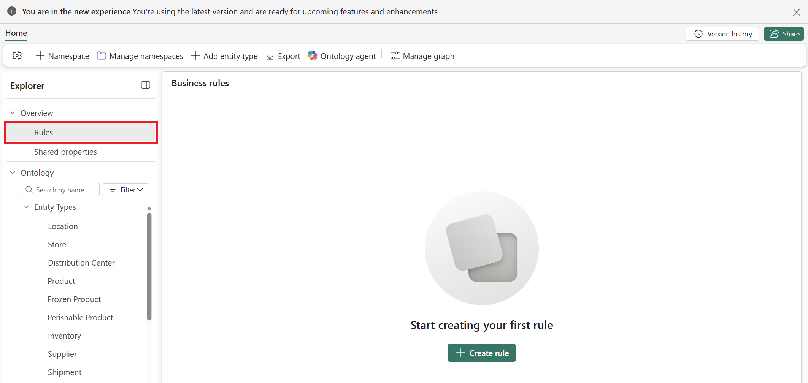
Select + Create rule.
If a Create rule dialog asks only for a name, enter Cold-chain exception and select Create. The Rule details page then opens. Enter the following rule details:
- Name: Cold-chain exception
- Definition: A frozen product has a cold-chain exception when the temperature of the refrigeration unit storing it remains above the product's maximum storage temperature for more than 20 minutes.
- Linked ontology concepts: Frozen Product, Refrigeration Unit
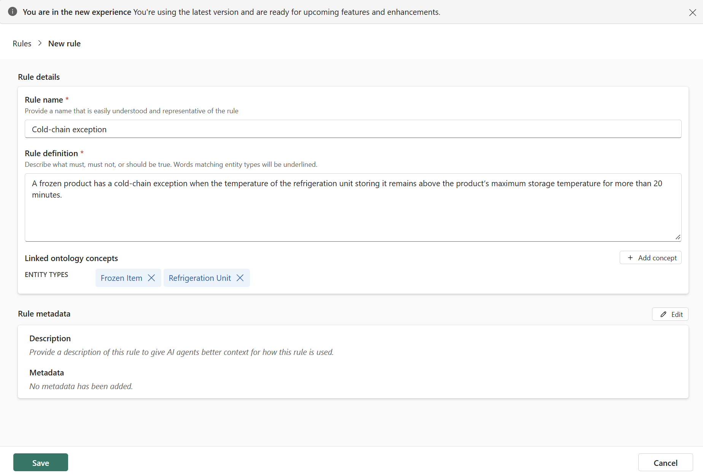
Under Linked ontology concepts, select Add concept, check Frozen Product and Refrigeration Unit, and select Save in the Add concepts dialog. Then select Save on the Rule details page. After the rule finishes saving, select Cancel to close the configuration details.
You see the rule in the Business rules page.
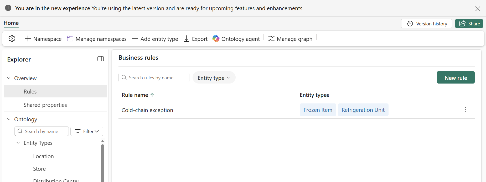
Select New rule to add more rules. Add two rules with the following details:
Name Definition Linked concepts Cold-chain exception A frozen product has a cold-chain exception when the temperature of the refrigeration unit storing it remains above the product's maximum storage temperature for more than 20 minutes. - Frozen Product
- Refrigeration UnitInventory at risk A store inventory position is at risk when projected on-hand inventory falls below safety stock before the next scheduled delivery - Store
- InventoryLate replenishment A replenishment shipment is late when its estimated arrival is more than four hours after its scheduled arrival. Shipment
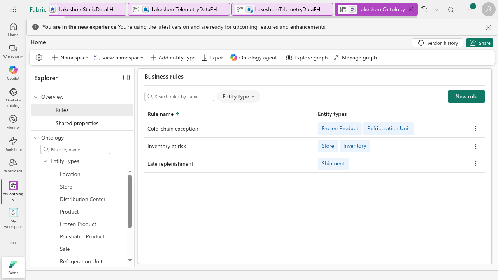
Checkpoint: Entity, property, and relationship metadata is saved, and the Business rules page contains three rules. Do not create Cold-chain exception twice; it is repeated in the rule reference table.
Part 4: Explore canvas views and entity instances
Explore canvas views
The home configuration canvas of ontology contains three views: full ontology, lineage, and relationship.
Full ontology
The Full ontology view of the canvas shows all entity types and relationships present in the ontology. Select an entity type from the Explorer to center it in the canvas window.
Lineage
The Lineage view of the canvas shows the inheritance structure of entity items. Select an entity type from the Explorer to show it in the canvas along with any inheritance relationships.
Relationship
The Relationship view of the canvas shows the relationships of entity items. Select an entity type from the Explorer to show it in the canvas along with any modeled relationships.
Explore entity instances
Verified troubleshooting: If Instances returns "Oops. Something went wrong", refresh once and check the saved property bindings. For Inventory, confirm the composite key described below before trying Instances again. In the learner run, Inventory rows loaded after its StoreId + ProductId key was saved; the earlier generic error did not identify a cause.
When you bound data to your entity types in Part 2 of this lab, ontology automatically created instances of those entity types that map to the source data rows. View the entity instances with these steps:
Start in the Home configuration canvas of ontology. Select an entity type, and View Entity Type details from the top ribbon.
For Inventory, open Configure and inspect the entity type key. If no key is defined, select Define entity type key. In Add or edit key, open Property list and select both StoreId and ProductId. Close the dropdown with Escape or by clicking outside it, then select Save. If the key is already defined, confirm it contains both fields and leave it unchanged.
Return to the Inventory entity type details. This composite key identifies each store-product inventory position.
Open the Instances tab. You see a list of entity instances with data populated from the original lakehouse table data source. For example, the Inventory entity type instances have columns like
ProductId,OnHandQuantity, andShelfAvailableUnits.Tip: If data bindings don't load, confirm that the source data tables exist with matching column names, and that your Fabric identity has data access.
Checkpoint: You have explored the full ontology, lineage and relationship canvas views, and the Inventory Instances tab shows source rows.
Return to the ontology home canvas. Continue with Part 5 in the same ontology and workspace, using the entity types, data bindings, metadata and rules you created in Parts 2 and 3.
Part 5: Answer business questions with the ontology agent
Get started with ontology agent
The ontology agent (preview) is an AI-powered Copilot that helps you build and operate ontologies over the data in your Microsoft Fabric workspace by using a chat interface and natural language.
To access the ontology agent, select Ontology agent from the top ribbon in the home canvas. The agent opens in a pane on the right side of the screen.
The agent opens in Plan mode by default. In Plan mode, the agent can query and explore the ontology, but it doesn't make any changes.
Ask questions in natural language
Interact with the ontology agent to ask questions about the scenario in natural language.
Wait for the agent pane to finish loading, confirm Plan is selected, enter the following question in Say something, and select Send: Which frozen products are stocked at Tier 1 stores in the West?
The agent may take several minutes to inspect the schema and query the sources. Wait for its final answer, not only a completed progress step:
Explore the ontology further with the following queries, or create some of your own:
- Which of those inventory positions are below safety stock?
- Which affected stores had a qualifying refrigeration-temperature exception? Use the sample window
2026-08-27T19:00:00Zthrough2026-08-28T19:00:00Z, not the current date. - What inbound shipments are expected for the affected products and stores? Use scenario time
2026-08-28T19:00:00Z. - What is the on-shelf availability of frozen products for each store?
- Which of these stores have low on-shelf availability?
- Which of these stores have declining gross margin this month? For this sample, define "this month" as August 2026 rather than the calendar month today.
- Which of these stores have declining gross margin?
Answer scenario question
Use the agent to answer the major question of the Lakeshore Retail scenario: Which high-priority stores in the West have frozen products below safety stock, a recent refrigeration-temperature exception, and on-shelf availability below target? For each store, show the next inbound shipment and its expected arrival.
Append: Use the sample scenario as of 2026-08-28T19:00:00Z; check refrigeration telemetry from 2026-08-27T19:00:00Z through that time, and show future shipments relative to that sample time. State the thresholds, time window and supporting rows. In the verified learner run, an unqualified temperature query used the last 30 days and incorrectly returned no exception because the sample telemetry is from August.
The agent considers your ontology and queries your data sources, then provides an answer to the question. Validate it before accepting it.
Checkpoint: The ontology agent answers the final scenario question using the definitions, source data, metrics, and relationships you configured. Review the evidence before accepting the answer.
Historical screenshot caveat: The source screenshot above claims two qualifying stores. Do not copy that result: the supplied sample telemetry shows the qualifying exception at Seattle, not Portland. Validate the three conditions together and report any mismatch with a reference screenshot.
Execution status: Product, safety-stock, explicit-window temperature and on-shelf availability tests passed. The broader gross-margin trend query and first final scenario query returned generic errors. A later synthesis of already-queried evidence succeeded after correction of its ETA arithmetic. This is not a successful fresh end-to-end scenario query, and month-over-month gross-margin decline is unavailable because July has no data. An explicit within-August comparison was queried separately. Preserve the ontology and distinguish verified source facts from a partially validated agent workflow.
Verified sample scenario result
As of 2026-08-28T19:00:00Z, Seattle Market is the only Tier 1 West store that meets all three conditions. This result combines the individually validated queries and sample rows; the first combined query failed.
| Check | Seattle Market | Portland Market |
|---|---|---|
| Vanilla Bean Ice Cream on hand / safety stock | 8 / 20 | 6 / 18 |
| Cold-chain exception | RU-SEA-01 above -18 C, August 28 18:10-18:45 UTC, observed 35-minute span | No qualifying interval in the sample window |
| Frozen on-shelf availability | 42 / 54 = 77.8% | 37 / 49 = 75.5% |
| Next inbound shipment | SH-1001, 24 units, IN_TRANSIT | SH-1002, 20 units, IN_TRANSIT |
| Expected arrival (UTC) | August 29, 02:00 | August 29, 00:00 |
| Time until arrival from scenario time | 420 minutes (7 hours) | 300 minutes (5 hours) |
| Delay versus scheduled arrival | 300 minutes | 60 minutes |
| Meets all three conditions? | Yes | No, fails the refrigeration condition |
The agent initially confused time until arrival with shipment delay. Calculate these separately from the timestamps rather than trusting the label in its summary.
Validate the final answer
- Keep the ontology agent in Plan mode for queries. Use Act only for an intended ontology change, after reviewing its plan.
- Check the answer against Inventory instances, product storage limits, telemetry timestamps, shipments, and the SalesReport measures. Agent answers and screenshot row counts can vary.
- The sample CSVs contain August 2026 timestamps. Treat "recent", "next", and "this month" relative to the sample scenario when testing, not as live operational data. Ask the agent to state its time window.
- The tutorial describes InventoryStatus as 0 = AT_RISK and 1 = HEALTHY, but the sample has status 1 on the Seattle and Portland rows below safety stock. Do not use that status flag alone to decide risk. Validate OnHandQuantity against SafetyStockQuantity and report the mismatch.
- For Seattle RU-SEA-01, eight above-threshold samples span 18:10 to 18:45 UTC on August 28. The observed first-to-last span is 35 minutes; an agent counting each sample as a full five-minute bucket may report 40 minutes. Both exceed 20 minutes, but report the actual interval and duration convention rather than implying continuous measurement between samples.
- Confirm whether on-shelf availability is shown as a percentage or a fraction. The below-95 target means below 95%, or below 0.95 when the value is represented as a ratio.
- In the learner test, an inbound-shipment query returned "none" despite sample rows SH-1001 (Seattle, 24 units, ETA 2026-08-29T02:00:00Z) and SH-1002 (Portland, 20 units, ETA 2026-08-29T00:00:00Z), both for P-FRZ-001 with status IN_TRANSIT. The first source-row diagnostic returned a generic error. Live Shipment Instances and a simpler read-only SQL diagnostic confirmed both rows, ruling out missing ingestion. Retesting with
Status IN ('IN_TRANSIT', 'PLANNED')andEstimatedArrival > '2026-08-28T19:00:00'returned both shipments correctly. The agent attributes the earlier exclusion to "In Transit" versusIN_TRANSIT; the earlier full SQL is truncated, so that specific earlier predicate was not independently inspected. Always use actual stored status values, not guessed display labels. - For the August-vs-July Gross Margin % test, the semantic model returned August values but July was blank for every store. A missing comparison period means a decline cannot be determined. Do not convert blank to zero or describe an untestable trend as "no decline." A simpler date-coverage diagnostic returned 1,344 Sales rows from August 1, 2026 02:00 through August 28, 2026 11:49, with only August present. An explicit SalesReport Gross Margin % query comparing August 1-14 against August 15-28 returned declines for San Francisco (48.39% to 47.95%), Boston (48.28% to 48.11%), and New York (48.42% to 47.62%); Seattle, Portland and Denver increased. These are the live model query results, not a separate recalculation from raw sales rows. Do not label this half-period comparison month-over-month.
- If a query fails, confirm source access, saved bindings and matching columns, imported semantic model availability, and tenant configuration. Do not accept missing or incomplete data as proof that no stores are at risk.
Review and clean up
You have connected business relationships, inheritance, operational definitions, and governed metrics in one ontology. You can now explain which stores need attention and why.
- Review that all five checkpoints are complete. Keep the workspace if your instructor needs to inspect it.
- Optional cleanup, only with separate approval after review: remove a dedicated lab workspace that you created. Keep ws_ontology and its results for review. Open its Workspace settings, then the General section, and choose Remove this workspace. Do not delete a shared or production workspace.